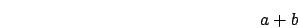
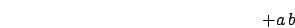
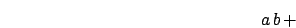
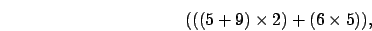
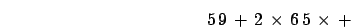
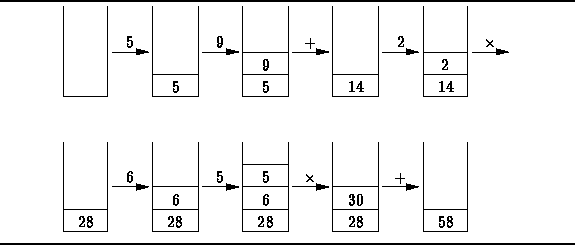
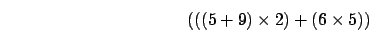

Taller 4
Evaluación de Expresiones Postfijas e Infijas
Fecha de Entrega: Miércoles, Septiembre 24,
2003
Nosotros generalmente usamos expresiones como la siguiente:

Este tipo de notación es llamado notación infija,
puesto que
el operador se encuentra entre los dos operandos. Dependiendo en la
posición del operador se pueden tener otros dos tipos de
notación:
- Prefija. El operador se ubica antes de los operandos:

- Postfija. El operador se ubica después de los
operandos:

Por ejemplo, la siguiente expresión infija,

se puede escribir usando notación postfija de la siguiente
forma:

Una interesante propiedad de la notación postfija (y prefija) es
que
no necesita de paréntesis para expresar el orden de
aplicación de
los operadores. Una expresión postfija se puede evaluar con la
ayuda
de una pila usando el siguiente procedimiento:
- Recorrer la expresión de izquierda a derecha y para cada
termino hacer:
- Sí el término es un valor, introducirlo en una
pila
- Sí el término es un operador:
- Sacar dos operandos de la pila
- Aplicar el operador
- Meter el resultado en la pila
La siguiente figura ilustra el proceso:

- Implementar una programa que:
- Reciba en la línea de comando una expresión
postfija que puede incluir:
números complejos (con el mismo formato usado en el Taller 2),
operadores
de suma, resta, multiplicación y división (+, -, *, /).
Cada término
de la expresión debe estar separado por un espacio.
- Evalúe la expresión e imprima el resultado.
- Ejemplos:
- java Postfija -3+4i 10-2i +
==> 7+2i
El siguiente algoritmo permite pasar una expresión infija a
postfija:
- Recorrer la expresión de izquierda a derecha y para cada
termino hacer:
- Sí el término es un valor, imprimirlo en la
salida
- Sí el término es un operador, introducirlo en
la pila
- Sí el término es ')', sacar el elemento del
tope e imprimirlo en la
salida
- Sí el término es '(', ignorarlo
- Realice el seguimiento del anterior algoritmo para la siguiente
expresión,
mostrando en cada paso el contenido de la pila y los datos impresos
en la salida:

- Implemente un programa en Java que reciba en la línea de
comandos
una expresión infija (totalmente parentizada) e imprima la
expresión
convertida a postfijo. La expresión puede incluir:
números complejos,
operadores (+, -, *, /) y paréntesis: '(', ')'. Cada
término de
la expresión, incluidos los paréntesis, deben estar
separados por
espacios.
- java Pre2Post ( -3+4i + 10-2i )
==> -3+4i 10-2i +
- java Pre2Post ( ( -3+4i + 10-2i ) * -2+3i
)
==> -3+4i 10-2i + -2+3i *
- Implemente un programa en java que reciba en la línea de
comandos
una expresión infija (con las mismas características del
punto anterior)
e imprima el resultado de evaluar la expresión.
- java Infija ( -3+4i + 10-2i )
==> 7+2i
- java Infija ( ( -3+4i + 10-2i ) * -2+3i )
==> -20+17i